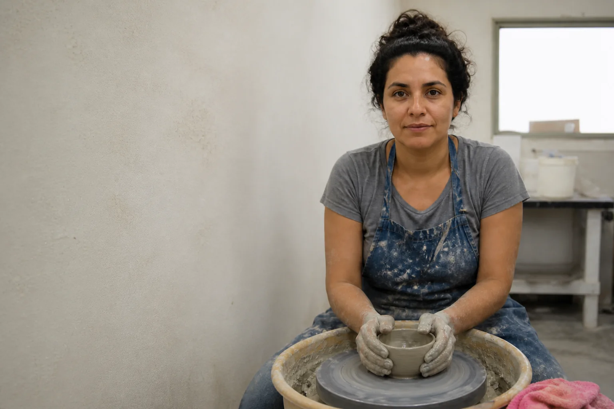
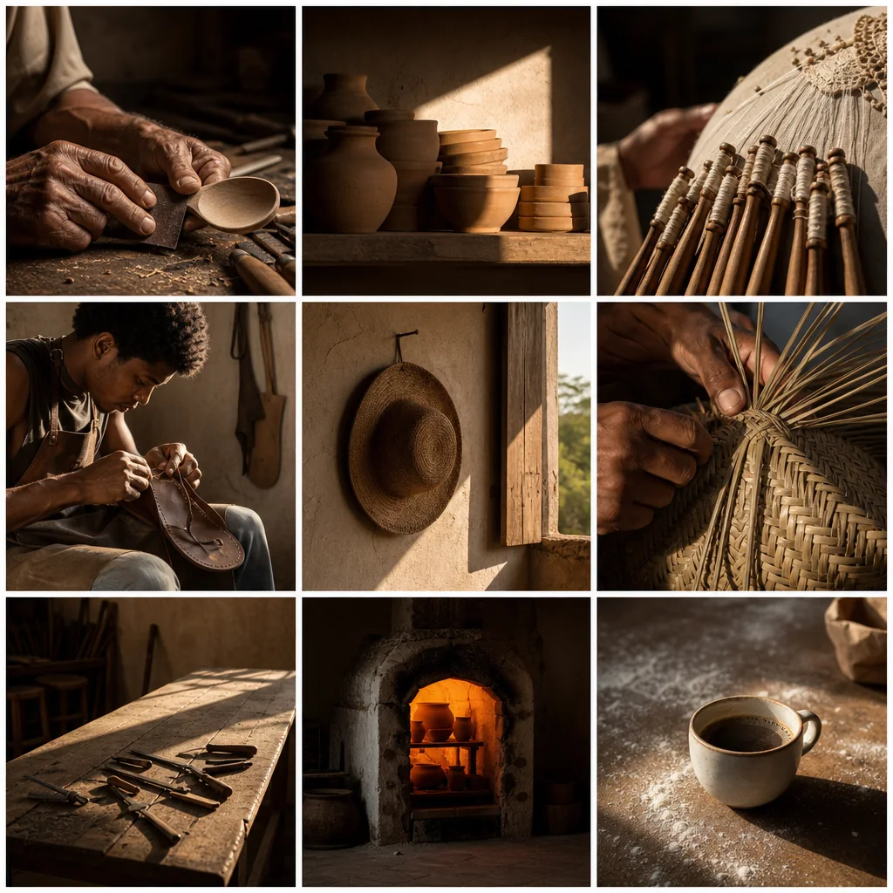
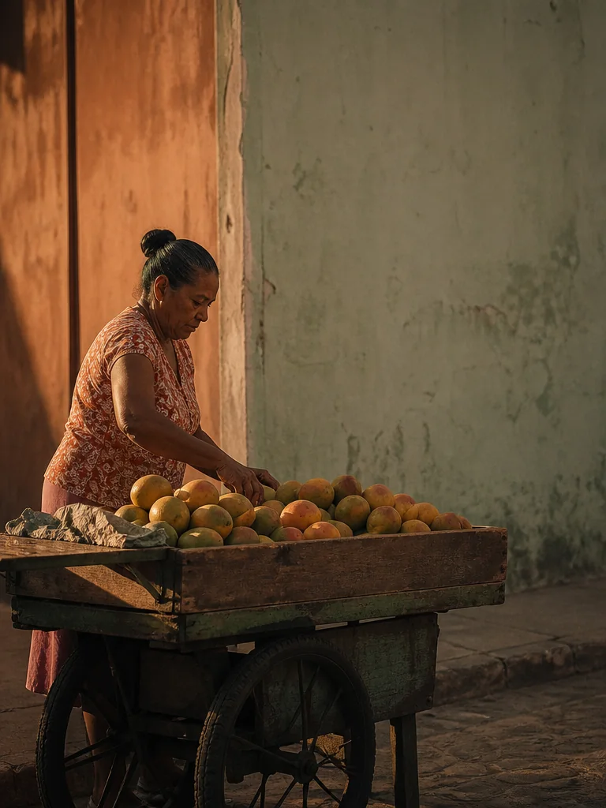
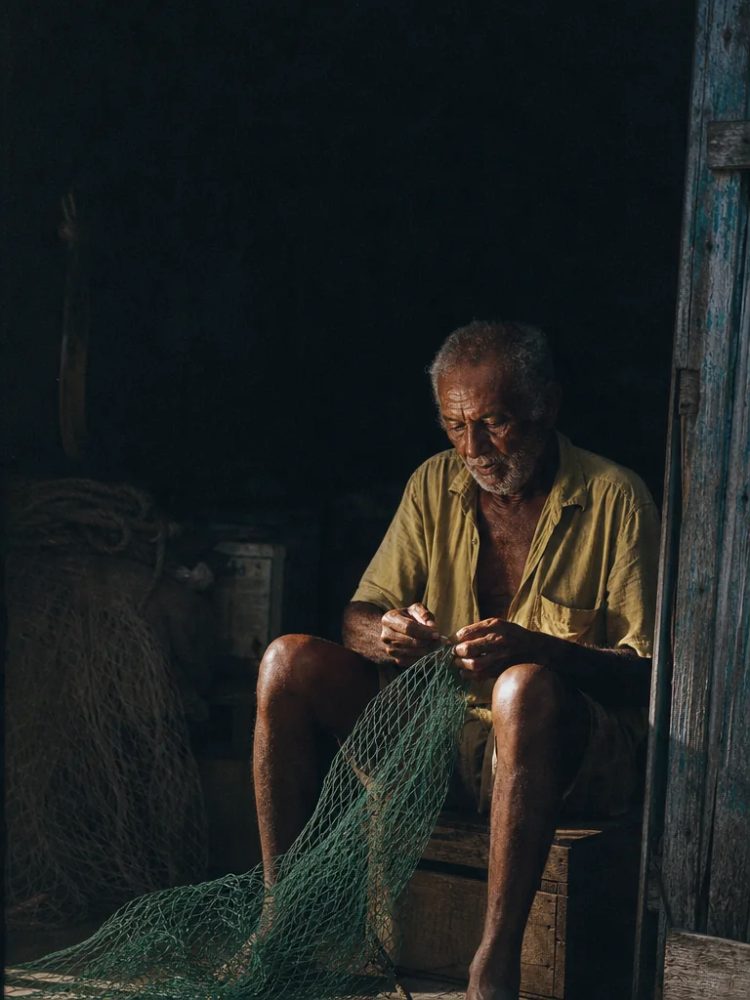

👁️ Gosto é treinável
Ao terminar, você sabe separar uma imagem “comum” de uma imagem “pensada” decisêo por decisêo, montou seu primeiro board de referências, encontrou nele 2 a 4 padrões e começou um hábito diário de 15 minutos que treina o olho de verdade.

Só a composiçêoTópicos
O que é
Gosto visual é a sua identidade estética: as escolhas de luz, cor, composiçêo, textura e clima que você repete de propósito.
Por que aprender
Sem essas escolhas, o modelo decide por você — e decide pela média, que é genérica.
Conceitos-chave
Repertório + vocabulário + prática. Aleatório vs curado. Bonito nêo é o mesmo que pensado.
O que é
Desmontar a diferença entre a imagem comum e a pensada em decisões isoladas, uma variável por vez.
Por que aprender
Só dá para aprender uma decisêo quando se vê o efeito dela sozinha.
Conceitos-chave
Quatro edições da mesma base, cada uma mudando só uma coisa, e o que cada uma ensina.
O que é
Montar um board de referências escolhidas com critério: 20 a 30 para começar, 5 novas por dia.
Por que aprender
O board é a matéria-prima de tudo que vem depois: sem ele nêo há padrêo para encontrar.
Conceitos-chave
Ativos, nêo inspiraçêo. Critérios de seleçêo. Um board-tema gerado como exemplo.

O que é
Olhar o board inteiro e identificar de 2 a 4 escolhas que se repetem.
Por que aprender
As repetições nêo sêo acaso: sêo o seu gosto aparecendo antes de você saber nomeá-lo.
Conceitos-chave
Checklist de leitura por camada e um exemplo resolvido com o board do tópico anterior.
O que é
Traduzir os padrões encontrados em palavras concretas de luz, cor, textura, composiçêo, lente e clima.
Por que aprender
O modelo só obedece ao que você consegue escrever; gosto sem vocabulário nêo entra no prompt.
Conceitos-chave
Adjetivo vago vs decisêo escrita. Um bloco de estilo reutilizado em três assuntos diferentes.

Vendedora de mangaO que é
Refazer a receita de uma imagem que você admira com outro assunto, e praticar variações controladas.
Por que aprender
Recriar ensina como um estilo é construído — luz, composiçêo, textura, ritmo — de um jeito que só olhar nêo ensina.
Conceitos-chave
Estudo vs cópia (tabela). Uma referência e seu estudo. Micro-exercícios.

ReferênciaO que é
Transformar o método em rotina: coletar, observar, anotar e praticar um pouco todo dia.
Por que aprender
Gosto cresce por repetiçêo pequena e constante, nêo por projetos grandes esporádicos.
Conceitos-chave
Rotina de 15 min, feed como máquina de aprender, as três perguntas e o caderno de olhar.
🛠 Prática guiada
seu primeiro board, seus padrões e três imagens consistentes
🏠 Liçêo de casa
No caderno de olhar: o board (ou link), a página de padrões com a direçêo em uma linha, a lista de 10 palavras, as 3 imagens com seus prompts e a lista dos 10 criadores. Se fez o avançado, o antes/depois com a análise.